Definition
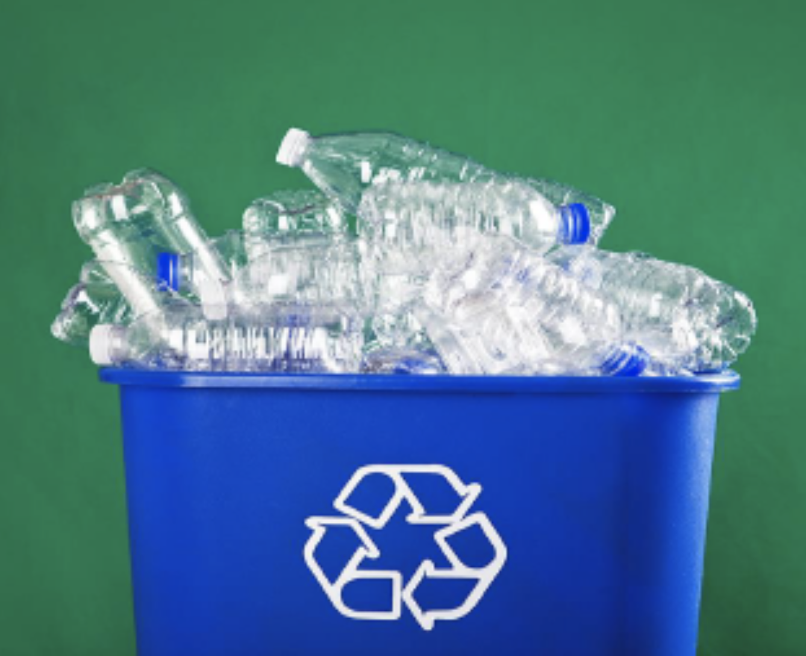
19th - century beverage makers wanted to create a closed-loop recycling system for their bottles. This was not an environmental aim, but a budgetary one. Glass bottles were ridiculously expensive to make, and consumers loved to keep them, using them for storage of their own liquids and perishables at home. Some beverage manufacturers were known to hire raiding parties of people’s homes to try and steal back this precious primary packaging.
By the 1980s, however, mass-produced plastic made bottles inexpensive — and people rarely reused them. They often ended up being tossed on the side of the road, and the beverage companies simply made more of them.” - NY Times, 2019
The Solution that Caused the Problem:
PET- Polyethylene Teraphthalate
- Sourced from oil
- Oil converts to resin pellets
- Pellets are melted and extruded
- Light, easy to handle and fill
The Problematic Solution:
RPET – Recycled Polyethylene Teraphthalate
- Sourced from recycled PET bottles
- Limited supply chainIm
- Mature market dependent on consumer cooperation with domestic recycling
Supply Chain Overview
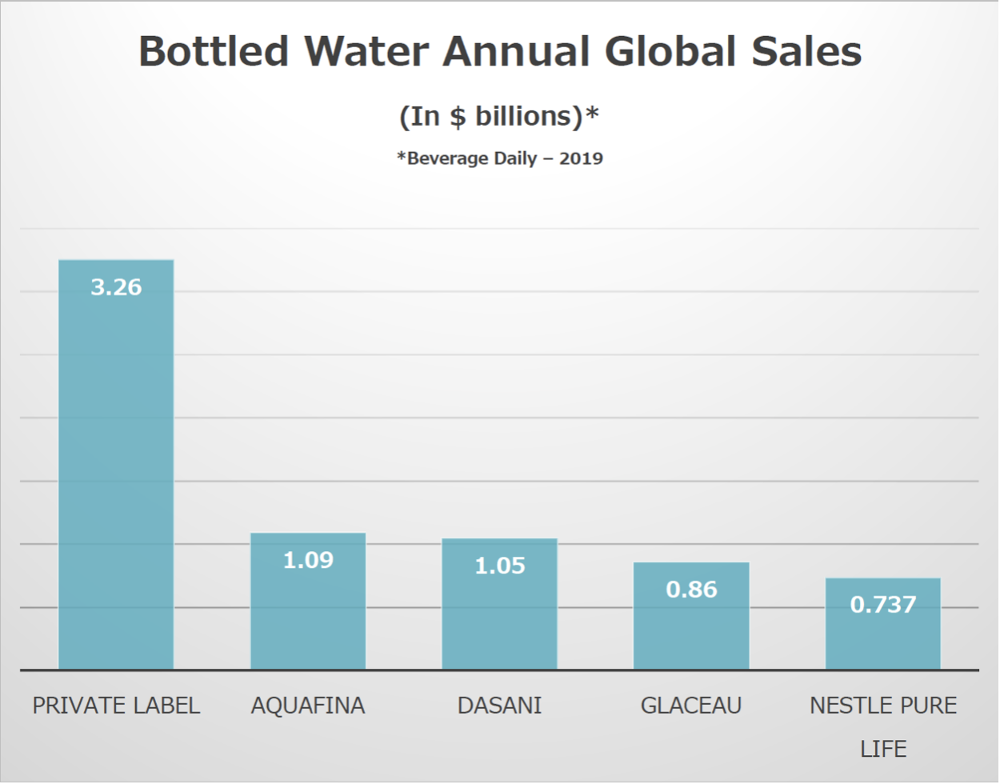
Why doesn’t everyone just start using Recycled PET (rPET)?
PRODUCERS OF PET VIRGIN RESIN ARE EASY TO FIND, READILY AVAILABLE, AND COST-EFFECTIVE:
Top ten producers of virgin plastics and resins
- DOW Chemical - $49 billion, Midland Michigan
- Lyondell Basell - $ 34.7 billion, Houston, Texas
- Exxon Mobil - $290 billion, Irving, Texas
- SABIC (Saudi Arabia Basic Industries Corporation) - $35.4 billion, Riyadh, Suadi Arabia
- Ineos - $ 60 billion, Sweden
- BASF - $ 65.4 billion, Germany
- ENI - $ 89.4 billion, Rome, Italy
- LG Chem - $ 25.5 billion, South Korea
- Chevron Phillips - $ 158.9 billion, Woodlands, Texas
- Lanxess - $ 7.9 billion, Cologne, Germany
PRODUCERS OF RECYCLED PET (rPET) ARE NOT SO EASY TO FIND, OPERATING AT HIGH CAPACITY, AND NOT CHEAP:
- Phoenix Technologies - $ 168.8MM, Bowling Green, Ohio
- Frapak - $ 6.6 MM, The Netherlands
- Carbonlite Industries – $ 3.5MM, Riverside, CA
- Ioniqa Technologies - $ 3MM, The Netherlands
- ALPLA – $ 769,823 Austria, Poland, Germany
- BP Infinia – Under construction, Naperville, ILL
The problem with a limited supply chain
- Very few companies are making rPET
** Less secure raw material supply = higher cost, lower competition, less predictable forecasts, longer lead times, allocation to the larger companies first, less likelihood for innovation
- Immature Manufacturing Footprint
** By contrast over time, in mature manufacturing environments, factories build plants in closer proximity to converters, optimizing the supply chain *** They sell to distributors nearby - a more geographically desirable solution *** Until then, companies need to be willing to invest the time to handle more complicated logistics for delivering raw materials to converters and distributors *** Changing habits takes time. Most plastic bottles in the US are shipped to China to be recycled into fibers for polyester for clothing, fibers for textiles, stuffing for children’s toys, etc. **** Undoing this is disruptive to multiple revenue streams already in existence **** Recycling companies want their money, too, and aren’t motivated to sell domestically if the Far East solution is already lucrative and dialed-in
Recent & Relevant News
Which beverage brands have migrated to Recycled Plastic bottles (rPET)?
- COCA COLA – Only in two countries: the Netherlands and Norway
- PEPSICO – Only two of its many lines: LIFEWTR and Naked Juice
- NESTLE – On four of its many lines: Poland Spring, Ozarka, Deer Park, and Zephyrhills
- DANONE – Only one item, Volvic, in two countries: Switzerland and Germany
- KEURIG DR. PEPPER – None. Public statements claim this begins in the first half of 2021
Legal Issues & Major Controversies
Mapping the Supply Chain
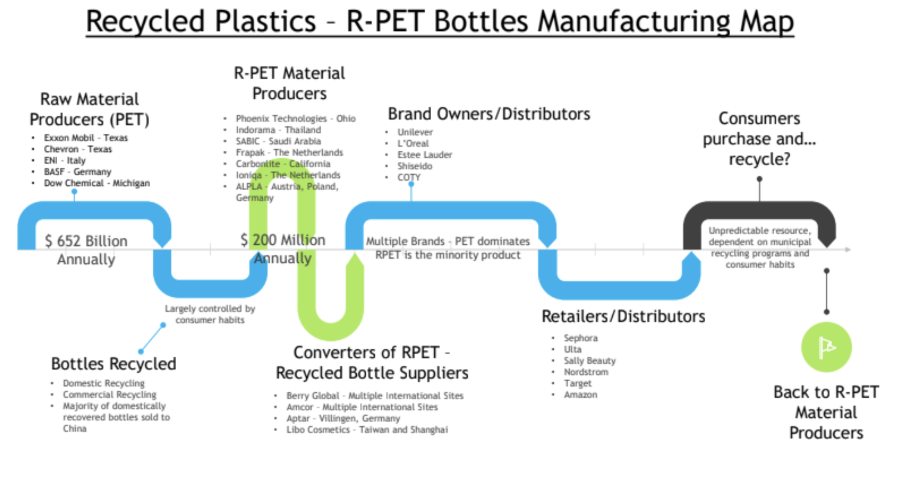
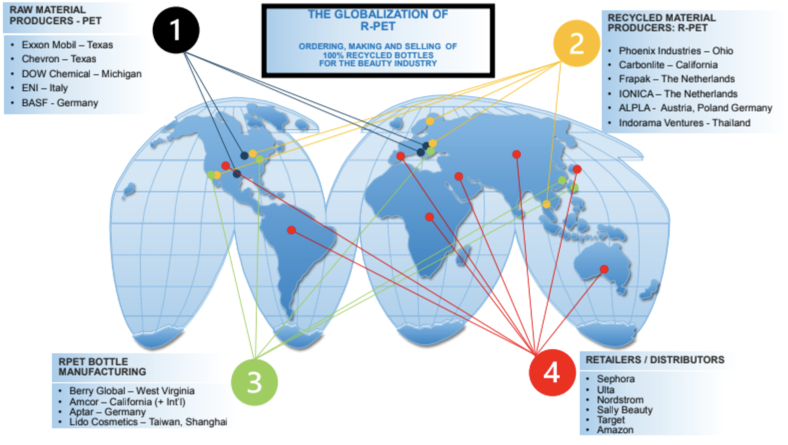
Supplier Engagement Model
Governance
Benchmarks
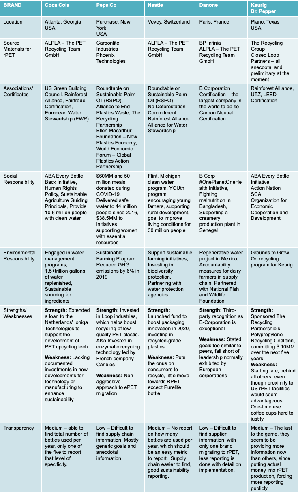
Monitoring
- Using the data records, companies monitor suppliers using Qualification Systems. For example, the Unilever Supplier Qualification System (USQS) is checked each time they make a new purchase order from a supplier.
- The companies expects suppliers are following their signed Code of Conduct. In addition to that they need to responsibly source their own suppliers, expecting suppliers to also follow their policies aligned with overall compliance.
- Impact assessments are conducted with full participation of affected communities and published in a format and language accessible to those affected communities. The assessment data is disaggregated by gender, national origin, tribe or caste.
- Companies may request financial information from suppliers and organize follow-up meetings for the proper monitoring of the relationship, which shall not limit the freedom of each party regarding its own management
- Companies ensure continuity across their supply chain — all suppliers have all the same information at the same time and that all suppliers respond on the same date
Verification
Reporting
Reporting (Internal and External)
- Externally, companies publish their Sustainability response/impact reports on their websites
** They partner with Global Reporting Initiative (GRI) and CDP to disclose climate, water, and forest response reports ** Some are very clear on number of non-conformances, high-risk suppliers, suppliers with issues, and needed audits
- Internally, stakeholders have quarterly, semi-annual, and annual reports
Life Cycle Assessments
This LCA would focus on PepsiCo’s 100% Recycled Plastic LIFEWTR bottle:
- Among the hundreds of historic brands under the PepsiCo umbrella, LIFEWTR was chosen to be the first beverage to be delivered in a fully recycled bottle, entirely made of Recycled Polyethylene Teraphthalate
- This LCA would analyze all systems associated with the manufacturing of this bottle, starting with the extraction of raw materials, creation of virgin plastic, eventual use and reclamation, conversion into reusable pellets, second conversion into recycled plastics, including the closure (cap), ending with consumer consumption and discarding
GOAL AND SCOPE
- Goal: to report a comprehensive set of environmental data around the production of post-consumer recycled resin and its conversion into the LIFEWTR bottle and cap, starting from the extraction of petroleum, its conversion into pellets, extrusion into a recyclable plastic product, distribution, consumption, recycling, recovery, conversion into RPET, extrusion into LIFEWTR bottle form, filling of product, distribution, consumption, and return to the recycling stream or reaching end-of-life
- Scope: this study will be limited to the LIFEWTR bottle and cap produced and sold in North America
SYSTEM BOUNDARIES
- All necessary processes from raw material acquisition to end-of-life, including:
** Petroleum extraction ** Conversion into pellets ** Extrusion into a virgin recyclable plastic form ** Transport and distribution ** Consumer consumption, recycling and recovery ** Conversion into RPET ** Extrusion into LIFEWTR bottle form, reinitiating the above process: filling of product, distribution, consumption, and return to the recycling stream or final disposal (end of life)
LIFE CYCLE INVENTORY (LCI)
Which indicators are evaluated?
*Source: The Association of Plastic Recyclers - 2018 Recycled Resin Report
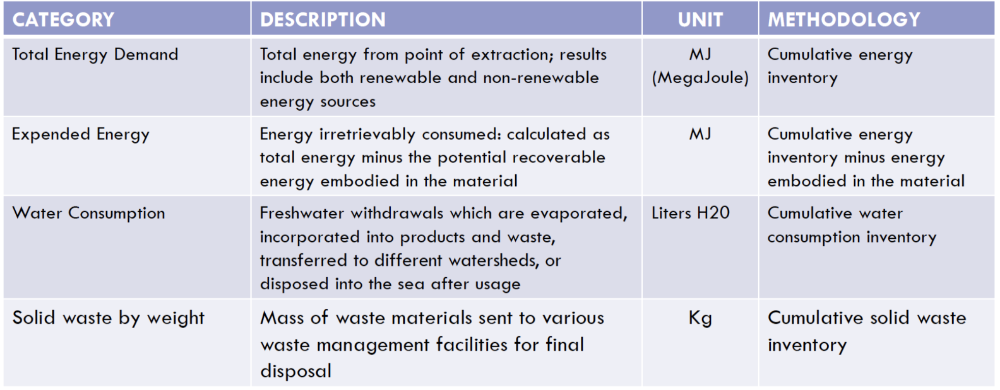
LIFE CYCLE IMPACT ASSESSMENT (LCIA)
HOW TO INTERPRET THE INVENTORY
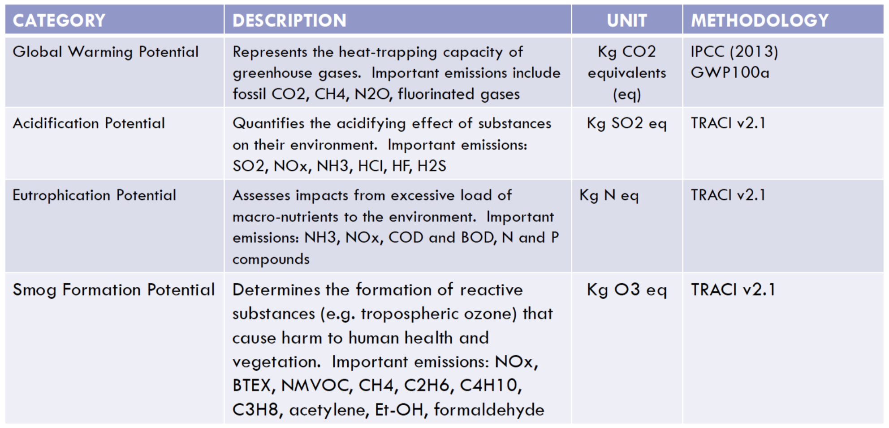
RAW MATERIAL EXTRACTION
- Extraction of crude oil in the Gulf of Mexico, California, and the Appalachian Basin, creating environmental effects on:
** Ocean life and ecosystem ** Water consumption during extraction process ** Equipment emissions and associated effects on air chemistry ** Energy consumed with extraction equipment and all associated support systems *** Utilities *** Material Handling Equipment and Consumables *** Use of barrels for storage and transport *** Warehousing
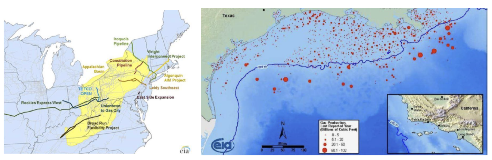
CRUDE OIL CONVERSION
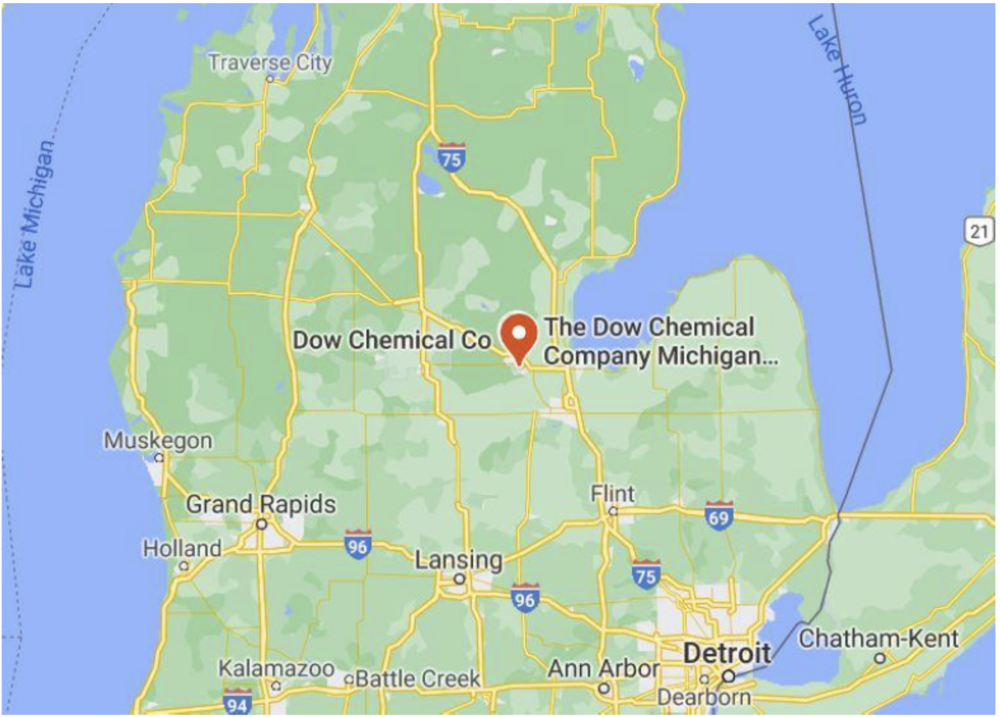
- Converting crude oil into pellets and flakes in Midland, Michigan creating the need for:
** Transport of crude from extractors to Conversion facility = emission calculations ** Excessive amounts of water and heat are used to create polymers that are shaped into resin pellets ** Energy output for utilities associated with conversion process
EXTRUSION: SHAPING PELLETS INTO PLASTICS
- Melting the pellets and extruding into useable plastic forms
** High energy demand to power this process ** Disposal of chemical waste
PLASTIC ITEMS MOVED THROUGH RETAIL, CONSUMED, RECYCLED
Plastic items transported, distributed through multiple retail channels, purchased and consumed, recycled by consumer
- Mileage = fuel burned, emissions created
MATERIAL RECOVERY AND CONVERSION TO rPET PELLETS IN BOWLING GREEN, OHIO
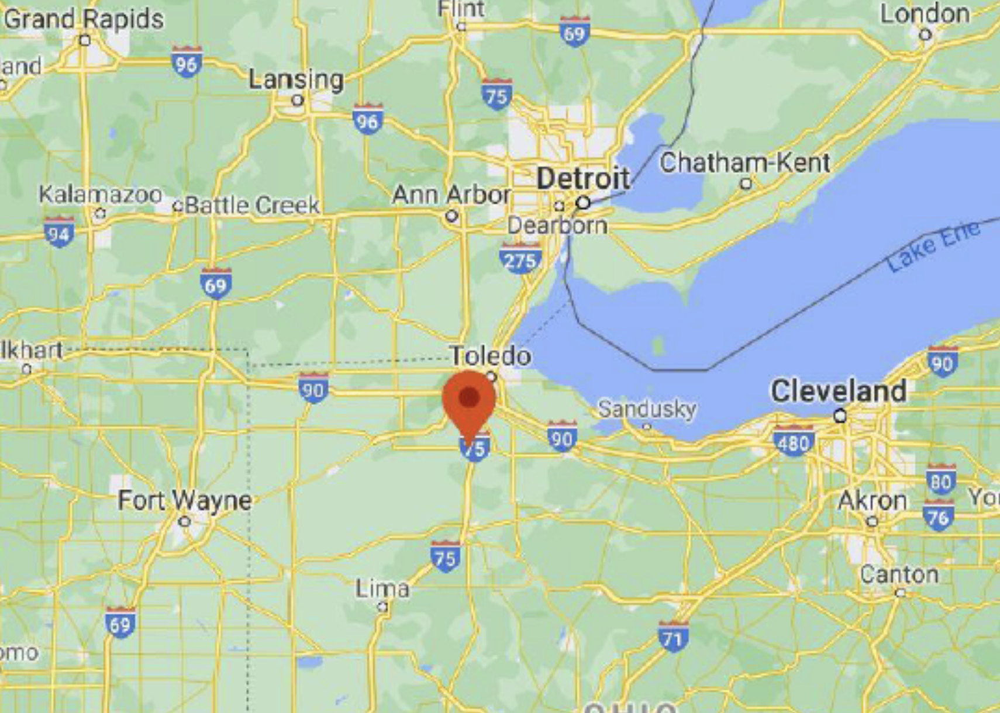
- For each recycled resin, the results tables and figures break out results by several life cycle stages:
** Collection and sorting of postconsumer plastic ** Transport to reclaimer ** Impacts for process water and chemicals used at reclaimer ** Process energy to convert incoming material to clean flake ** Process energy to convert clean flake to pellet ** Process emissions and wastes from reclaimer operations.
SECOND LIFE
100% RECYCLED PLASTIC BOTTLE
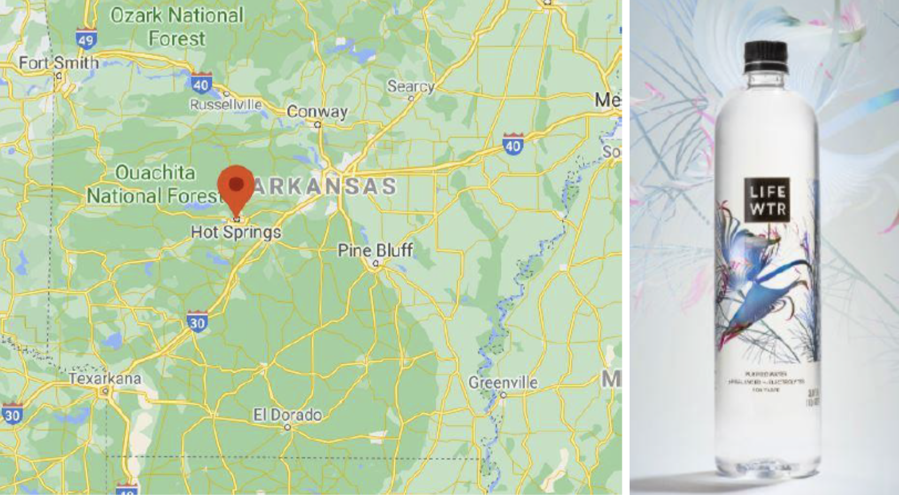
- Melting the pellets and extruding into the LIFEWTR shape in Hot Springs, Arkansas
** Bottle and Cap formed from RPET flakes or pellets after having been melted, blown and molded into shape
- High energy demand to power this process
- Disposal of chemical waste
FILLING & DISTRIBUTION
- Transportation of newly-formed LIFEWTR bottles and caps to filling facility in Dade City, Florida
** Bottle is filled, printed, closed, packaged and staged for delivery to distribution partner ** Miles travelled delivering the final product to retail distribution point *** Fuel consumed and measured *** C02 emissions released into the atmosphere
CONSUMER PURCHASE, USE AND DISPOSAL INTO DOMESTIC CURBSIDE RECYCLING
Consumer purchases LIFEWTR at Walmart in Dade City, Florida
- After consumption, the bottle is recycled through Dade City’s municipal recycling program (domestic curbside)
SECONDARY MATERIAL RECOVERY AND CONVERSION
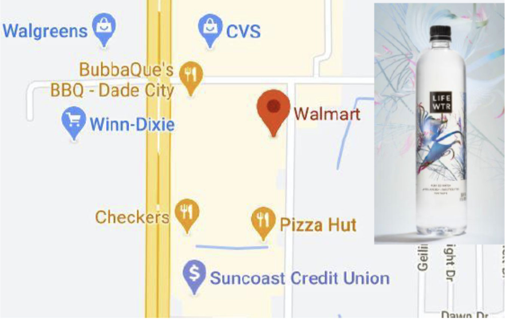
- Disposed LIFEWTR bottle joins the multiple items that made it to the recycling facility, beginning acquisition and sorting of plastics from other co-collected recovered materials
** Collection comes from residential curbside collection, drop-off programs, deposit redemption systems, and commercial collection ** Plastics are mixed with multiple recovered substrates: paper, steel, aluminum ** Cradle to Cradle = if RPET bottle is included in next round of recovery and re-use ** Cradle to Grave = if RPET bottle is determined to have degraded too far for another round of recovery and re-use
INTERPRETATION OF RESULTS
- Total Energy Consumed = ?? MegaJoules
** Expended Energy = ?? MegaJoules ** Water Consumption = ?? Liters H2O ** Solid Waste by Weight = ?? Kg
- Although the creation and use of the recycled plastic LIFEWTR bottle is an improvement over the creation of more virgin plastic bottles, it proves to be an excessively problematic process as it relates to energy consumption and waste.
Other Challenges & Impacts
“The obtaining of high-quality recycled material for use in packaging is a key challenge. We would use more recycled plastic, like rPET, today if it were available. Insufficient supply of recycled material is part of the challenge we have to overcome to make our sustainable plastics vision a reality.”
- PepsiCo 2018 Sustainability Report
“There needs to be a robust and stable supply of food-grade recycled content. Unfortunately, less than 30% of all plastic bottles are recycled and many recovered beverage containers are being down-cycled and used in non-food contact applications versus being made back into beverage containers. To create a continuous supply of recycled plastic, there needs to be a broad, collective focus by industry, government, and NGOs to address critical issues related to infrastructure, collection, policy, consumer education and development of end-markets for recycled materials. We are encouraged by the accelerated collaboration among these groups, and we will continue to work with them to help increase the use of recycled content in packaging, encourage packaging design that is compatible with the recycling system, improve the recycling infrastructure and curbside access and educate consumers about the impact they can make by recycling.”
-Nestle 2018 Public Sustainability Statement
Nevertheless, the top beverage brands have aggressive sustainability goals for 2025, 2030 and beyond...
TOP BEVERAGE BRANDS: STATED SUSTAINABILITY GOALS
Coca Cola – to use at least 50% of recycled material in their packaging by 2030
PepsiCo – to reduce virgin plastic content by 35% by 2025
Nestle – to make 100% of its packaging across the business recyclable or re-usable by 2025
Danone - Evian announced all of its bottles will be made from recycled plastics by 2025
Keurig Dr. Pepper – Use 30% post-consumer recycled content across all packaging portfolio by 2025
Innovations
- Continuous Improvement Guidelines
** Companies publish supplier improvement guidelines on their websites for clear and transparent expectations for both suppliers and employees. These guidelines are helpful in increasing the number of companies following best practices. *** For example, Unilever has a sourcing guide to help suppliers implement their own processes. And, Loreal has a FAQ guide to help employees who regularly interact with suppliers
- Although suppliers pass initial requirements and audits, they must continue to improve during the relationship as the Company aims for higher targets. This can be checked outside of regular monitoring as some companies require suppliers to re-register on a 1-3 year basis into the supplier system (a good time to re-check their previous qualifications and whether they’re meeting new qualifications).
** Companies improve internally by *** Creating Sustainability teams *** Adding Sustainability on regular agendas with senior management ** And, companies help suppliers directly through best practice programs *** For example, Loreal has a Sharing Beauty With All group and Estee Lauder emphasizes joint partnership so they openly communicate and receive input from suppliers. *** These partnerships allow for clear and effective internal training to mitigate risks like bribery and corruption, handling competitor information, fair competition, gifts and hospitality etc. They also help suppliers stay up to date on new resources that may impact their business.
- Future Plans & Benchmarking
** Companies partner with other organizations to help them with benchmarking and building sustainability plans for the future *** New Plastics Economy *** The U.S. Plastics Pact *** Sustainable Packaging Coalition (SPC) *** Sustainable Packaging Initiative for CosmEtics (SPICE) *** Circular Economy 100 (CE100) *** The Banking Environment Initiative (BEI) *** Quantis, specialist environmental consultancy *** The Consumer Goods Forum (CGF) *** Ellen MacArthur Foundation *** McKinsey & Company ** This is helpful because there’s a lot to tackle. For example, Unilever recognized 169 sustainability topics they’re trying to tackle in the next few years. *** One of notable next steps around packaging of Post Consumer Recycled Plastics: **** These brands note that there is a need to increase the amount of post-consumer recycled (PCR) materials in the market with limited availability of high-quality recycled waste materials (creating a high demand on the market) **** More suppliers of PCRs -- this is done by: ***** building the technical and commercial viability of reprocessing materials at scale ***** setting up long-term offtake agreements to build to increase technological investment in high quality recycled materials coming into the marketplace
Conclusions
BEST PRACTICES
- Invest in rPET manufacturing and technology enhancement - KDP $10MM example
- Collaborate with local policy makers and NGOs to accelerate PET recycling – Nestle example
- Identify ready regions and migrate chosen lines ASAP – Nestle example
RECOMMENDATIONS
- Regional migration – speed it up!
- Invest in more private companies and equipment to bolster rPET recycling facilities
- Partner with companies like LOOP to develop reusable packaging and do away with single-use plastics
Sources and References
- Ecowatch: https://www.ecowatch.com/nestle-plastic-recycling-2644842124.html
- Beverage Daily: https://www.beveragedaily.com/Article/2018/04/11/Nestle-Waters-on-plastic-bottles-PET-and-rPET
- PETCO Consumer Research - https://petco.co.za/consumer-research/
- PET Resin Association - http://www.petresin.org/recycling.asp
- NY Times article - https://www.nytimes.com/2019/07/04/business/plastic-recycling-bottle-bills.html
- Ellen Macarthur Foundation: https://www.ellenmacarthurfoundation.org/news/spring-2019-report
- Reuters - https://www.reuters.com/article/us-nestle-greenpeace/greenpeace-calls-for-nestle-to-act-over-single-use-plastics-idUSKCN1RN1X8
- Open Edition Journal: https://journals.openedition.org/factsreports/5102
- Packaging Digest: https://www.packagingdigest.com/sustainability/nestl-waters-makes-bigger-splash-rpet